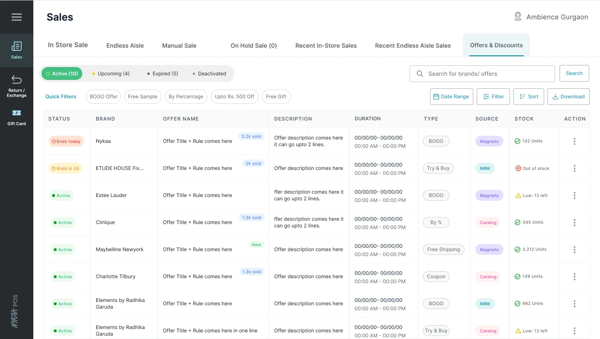
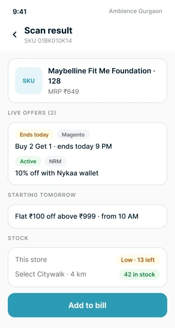
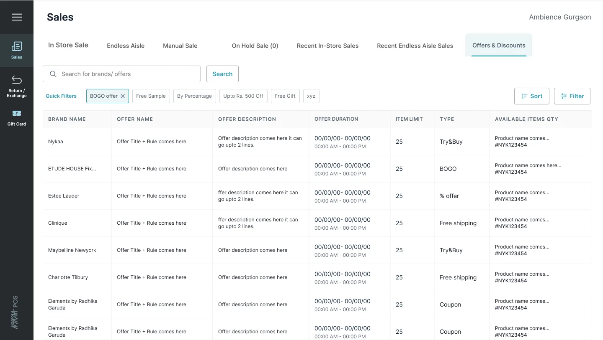
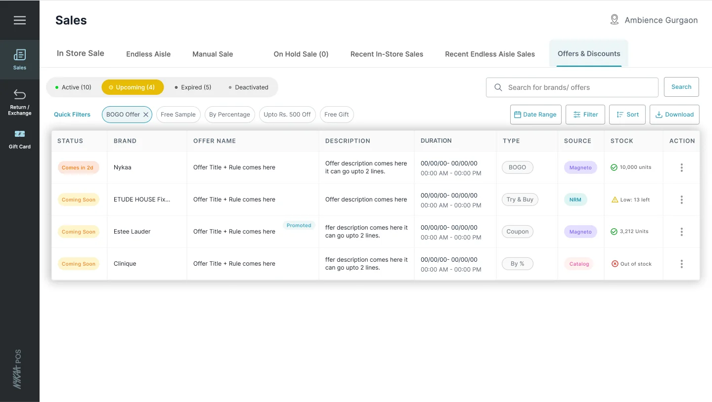
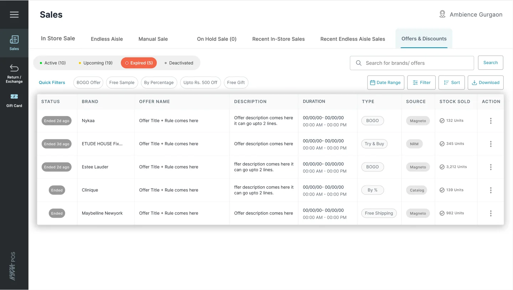
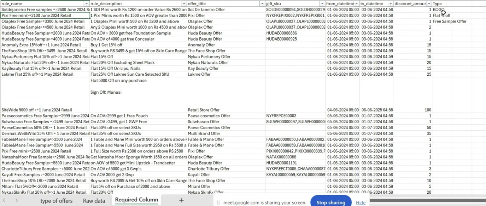
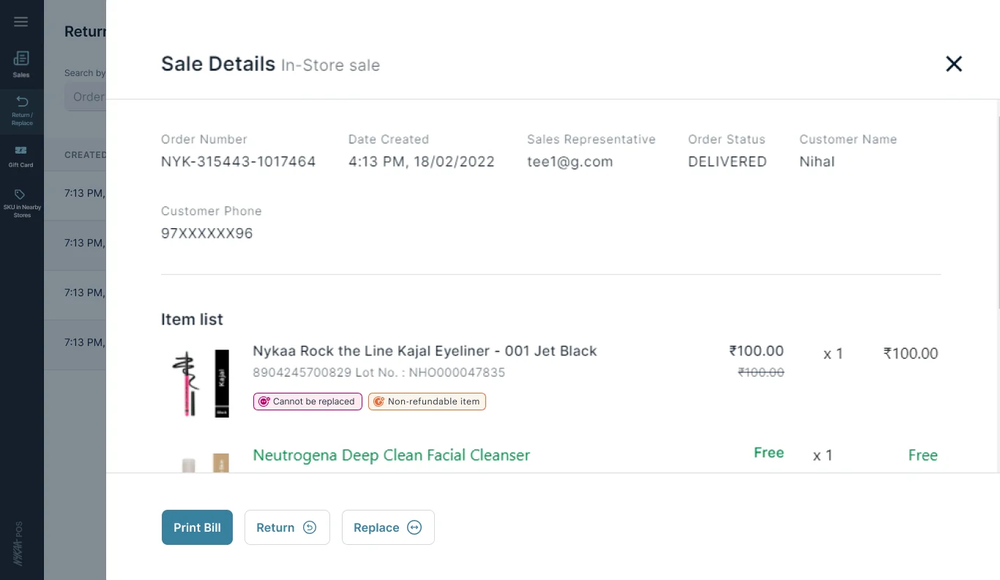

Case study · Nykaa Retail POS · Enterprise UX
One source of truth at the store counter
How I redesigned the way Nykaa store associates see live offers, stock and exchanges, and how head office drives auto-replenishment. The goal: decisions made in Magento, NRM, catalog and OMS hold up on the store floor.


At a glance
Three store workflows, one root problem
Offers & Discounts
One screen in the billing app that shows every discount, whether it's on right now, and how much stock is left.
Explore → Workstream BExchange
A simple way to swap an item for another size or shade, instead of refunding it and selling the new one separately.
Explore → Workstream CRestocking (ARS)
A clearer way for head office to upload the file that decides how much stock each store gets, and to see if it worked.
Explore →Frontline teams were making decisions on information that lived in other systems. Each workstream brings that information into the tool they already use, at the moment they need it.
The problem
Store associates were the last line of defence for decisions made in systems they couldn't see
cart rules go wrong every year: 10–15% of ~5.2k rules
a year on maintaining sheets and back-and-forth with BMs, Ops, POS support and catalog
customers a year affected when a promised offer doesn't apply
refunded at beauty stores in Q4 '21: revenue an exchange could have kept
for one customer intent: a return plus a brand-new sale just to swap an item
Offers and exchanges break the same way: the counter doesn't know what the backend knows.
Sources: internal PRD impact estimates; Q4 '21 store returns data (906 of 3.86 lakh orders had returned items).
Discovery · conflicting inputs
Every team had built its own workaround. Underneath, they all needed the same thing.
Methods: stakeholder interviews with BMs, store managers and the cart rule team · PRD validation · incremental fixes weighed against a revamp · usability testing on hi-fi.
Research synthesis
Six pain points, validated with stakeholders and users
give every associate the same real-time truth the backend has, at the exact moment of sale?
This let me say no to a prettier G-Sheet, a WhatsApp alerts group and a separate BM-only tool. Each solved one team's problem and left the counter blind.Workstream A · Offers & Discounts
From a cluttered table to a clear one
Store staff couldn't tell which discounts were running. A customer would ask about an offer, and nobody at the counter knew if it was real. We added one screen to the billing app that lists every offer, shows whether it's on, starting soon or over, and how much stock is left.
Drag the handle to compare my first version with the one I improved after feedback.

- Status (expiring, new) buried inside table cells
- No hierarchy between active, upcoming and expired
- Filters scattered: a removable chip here, buttons there
- Search disconnected from the filters
- Status tabs with counts give an overview first
- Status pills such as "Ends today" make urgency scannable
- New SOURCE and STOCK columns support operational decisions
- One filter bar, search next to status, actions moved to ⋮
Final design · try it
A live offer board inside the POS, where associates already work
This is the actual Figma prototype from the project. Click through it right here.
The same screen, broken down
An interactive rebuild of the final screen. Switch status, filter and search, then turn on Design notes to see why each part is there.
Sales
⌖ Ambience Gurgaon| Status | Brand | Offer | Duration | Type | Source | Stock |
|---|
No offers match. Try another filter.
- Status tabs with counts The overview comes before the table.
- Urgency pills "Ends today" sets expectations before billing.
- Source of truth Magento, NRM or Catalog ends the "which system?" debate.
- Stock beside the offer No more promising what can't ship.



Workstream B · Exchange flow
Swapping an item, in one simple flow
If a customer wanted a different size or shade, staff had to refund the item and then ring up the new one: two separate jobs, and often a lost sale. Now they can swap it in one go. The screen only shows items that are actually in the store, and it handles the tricky cases, like when nothing is in stock.
Click a step, or use the arrow keys, to walk through it.

It's picked automatically, but staff still confirm the batch and price.
Staff aren't stuck. They can switch to a refund in the same flow.
A short message tells staff the limit, e.g. "You can select 3 only."
The returned item goes back into stock and the new one comes out, automatically.
Workstream C · Auto Replenishment (ARS)
Behind every shelf is a file. If the file is wrong, every store is wrong.
Head office keeps a spreadsheet that decides which store gets how much stock, and which stores come first. Uploading it used to feel like a guess, because nobody could tell if it had worked. Now the screen shows each step and says clearly whether the file went through, or what went wrong so you can fix it.
Try it: pick a file type, upload, and switch between a good file and a broken one.
Master
- Initiate
- Uploaded
- Processed
Concepts · beyond the brief
Taking it to the associate's hand, and the manager's tablet
Store work increasingly happens on a phone on the floor and a tablet in the manager's hand. These concepts carry the same model into mobile, AI-assisted workflows, in Nykaa POS styling. Concept, not shipped. Illustrative data.
Suggested automations
Five flows that run themselves, with a human only where judgment matters
Outcomes
What shipped, and what it changed
- Offers & Discounts tab in the POS: status, source and stock in one view
- Exchange flow with 4 designed edge cases, replacing return + re-sale
- Proactive change notifications for BMs and Ops
- ARS master upload and download with a visible state and explicit errors
- Dev handoff docs, plus metric tracking set up for post-launch
- Satisfaction among retail operators: 91% → 96%
| Metric | Baseline | Target | Result |
|---|---|---|---|
| Misconfigured cart rules | ~800 / yr | Sharply fewer, via one source + alerts | Within −25% errors |
| Manual reconciliation effort | ~1,500 hrs / yr | G-Sheets retired | 1,500+ hrs saved / yr |
| Customers hit by offer disputes | up to ~1L / yr | Near zero at the counter | Within −25% errors |
| Refunds that could be exchanges | ₹23L in Q4 '21 | Shift returns to exchanges | No evidence |
| Steps to swap an item | Return + new sale | One flow | Shipped |
| Replenishment master updates | Outcome unclear | Validated, visible state | Shipped |
Reflection
Trade-offs, learnings, and what I'd build next
Incremental fixes before a revamp
I tested small fixes first, and only committed engineering to the full view once they fell short.
A tab inside the POS, not a new tool
Associates already juggle apps. Going where they work beat a cleaner standalone tool.
A ±X% price guardrail on exchanges
Some flexibility given up to protect margin and lot integrity.
Workarounds are research data
Each team's sheet or call pattern showed exactly where the truth was missing.
Status is the interface
At the counter, "is it live and in stock?" matters more than any other column.
Design the backend contract too
Inventory moves and API sources had to be agreed with OMS before the UI made sense.
AI mismatch detection
Flag when BM intent and live rules diverge, before a customer finds out.
Offer change → floor task
Turn a go-live into a mobile task: re-tag the shelf, move stock to the front.
Live stock in every offer
Feed RFID-accurate inventory into offer availability and exchange suggestions.